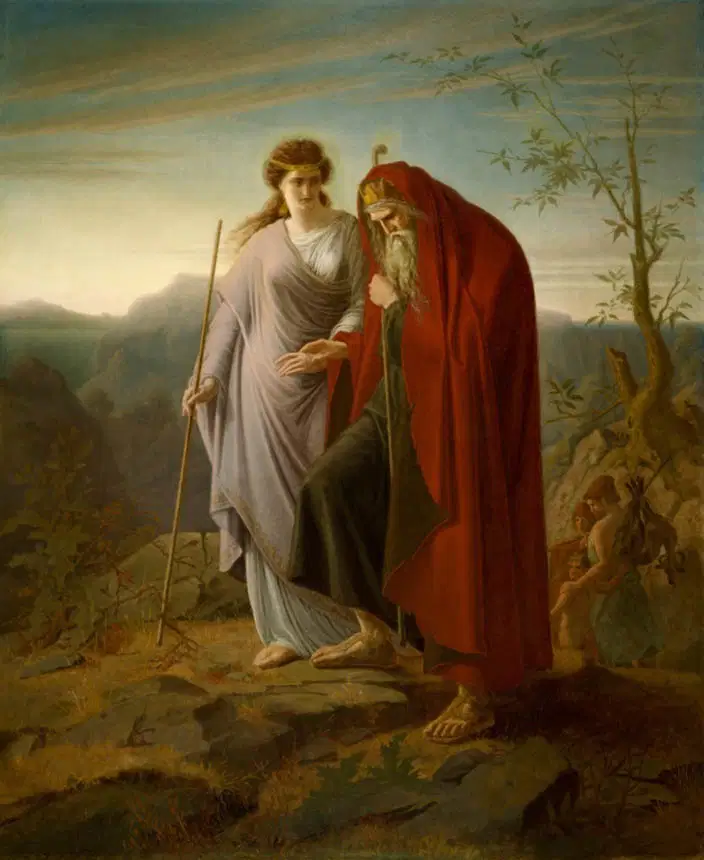

Years after Oedipus became the king of Thebes, the city was ravaged by a plague. The people of Thebes looked to their king, Oedipus, for answers. Determined to save his kingdom, Oedipus sent his brother-in-law Creon to consult the Oracle of Delphi once again. The Oracle revealed that the plague was a result of the unpunished murder of the former king, Laius.
Oedipus vowed to rid Thebes of the curse by finding the murderer of Laius. He did not know, however, that he was searching for himself. Oedipus interrogated witnesses, consulted prophets, and called for anyone with information to come forward. All the while, his true identity began to unravel.
Piece by piece, the horrific truth was revealed: Oedipus was the very man he was searching for. The stranger he had killed years ago on the road to Thebes was none other than his father, Laius. The woman he had married and fathered children with was his mother, Jocasta. The prophecy he had tried so hard to avoid had come true, sealing his fate.
Upon realizing the truth, Jocasta, overwhelmed with grief and horror, took her own life. Oedipus, stricken with guilt and shame, blinded himself as punishment for his sins. Unable to bear the sight of the world he had destroyed, Oedipus chose exile from Thebes, wandering blind and broken, accompanied only by his daughters.
Oedipus' story stands as a testament to the inescapable nature of fate and the consequences of human pride. His tragic downfall teaches us that no man, no matter how powerful, can escape the will of the gods. Oedipus sought to defy his destiny, but in the end, his own actions fulfilled it.
| Name | Description |
|---|---|
| Antigone by Sophocles |
This is a continuation of the Oedipus story, focusing on his daughter Antigone. After the death of her brothers Eteocles and Polynices, Antigone defies King Creon's order not to bury Polynices. |
| Agamemnon by Aeschylus |
Part of the Oresteia trilogy, this tragedy tells the story of King Agamemnon's return from the Trojan War, only to be murdered by his wife Clytemnestra as revenge for sacrificing their daughter, Iphigenia. |
| Medea by Euripides |
Medea, the wife of Jason (of the Argonauts), is enraged when Jason abandons her and their children for another woman. In a devastating act of revenge, she murders their children and Jason's new bride. |
| The Bacchae by Euripides |
The story follows Dionysus, the god of wine and ecstasy, as he returns to Thebes to punish King Pentheus for not acknowledging him as a god. Pentheus' refusal leads to his violent death at the hands of his own mother and the Bacchae (Dionysus' followers) |